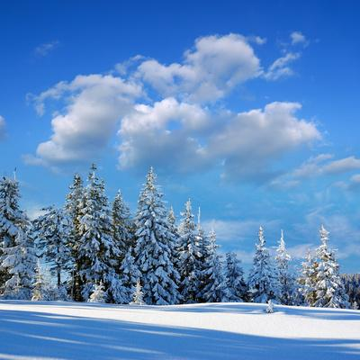

The Capital City
Kyiv
Kyiv (not Kiev!) is a place where the rhythm of history meets a modern urban vibe! Ukrainian capital is a modern city, home to hundreds of successful startups, cultural events and cool venues to meet your every need! And when the sun goes down — rich nightlife gets started! See more.
 Click here to see more pictures
Click here to see more pictures
Cities
Other cities
The vibrant nightlife of Kyiv or Lviv’s coffee scent? Or maybe the summer breeze early in the morning in Odesa? Or epic architecture in Kharkiv? Every Ukrainian city — from West to East — has special things to offer. Explore top Ukrainian cities to visit and make a perfect travel route for a great holiday in Ukraine!See more.
If you are really up to ‘walking in our shoes’ and find some outdoor adventures, you’ll definitely have to try hiking in the Carpathians! Our advice: start with taking the train from Kyiv to Ivano-Frankivsk and enjoy the hospitality of this unique city where the traditions of Western Ukraine have fused with the history of the Habsburg Empire.Another possibility — go to Yaremche in Ivano-Frankivsk Oblast. It is located right in the middle of the Carpathian mountains. The highest Ukrainian mountain, Hoverla (2,061m), will be in close proximity.

With a diverse landscape and the outstanding Carpathian Mountains to enjoy, Ukraine is definitely a country with lots of adrenaline activities. There are endless opportunities for adventure in Ukraine in any season, actually. Check it out! Winter sports. Ukraine & Skiing?! No way!
However, it is true and popular. Moreover, cost-efficient. Come to Odesa and start your journey along the wine and taste route of the Ukrainian Bessarabia. During your journey you’ll explore wineries, cheese dairies, meat delicacies, natural and historical top-locations of the region.


Borsch (beetroot soup) is not just a traditional Ukrainian daily meal, it’s a symbol of unity – the basis of the culinary tradition of Ukraine, stronger than any modern experiments.
In Ukraine, borsch has long been considered a symbol of a strong family: all the ingredients are cooked in a clay pot, transferring their flavors to each other.

Ukrainians believe embroidery has a talisman meaning — the power to protect a person from all harm and bring good luck. Since ancient times, Ukrainians have created various patterns, techniques, and methods of dyeing threads. This knowledge was passed on to the next generations, that is why the embroidery varies depending on the region, and even different villages have their special and unique patterns, styles, and colours of Ukrainian traditional clothing. The most common ornaments are geometrical, which have a sacral meaning, and floral.
Even though vyshyvanka was an everyday type of clothes, Ukrainians created special designs for special life events, like weddings, holidays, or funerals with the corresponding to the occasion symbolic patterns and colours.
The national symbol of Ukrainians, a talisman and a real work of art. Learn more about vyshyvanka, its role in the world of fashion.